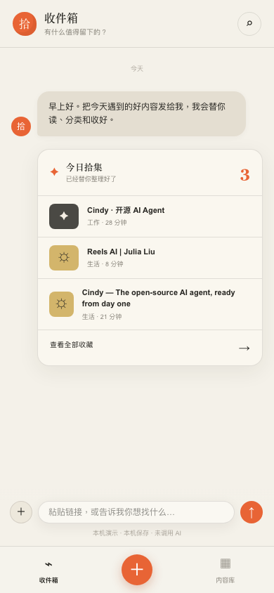
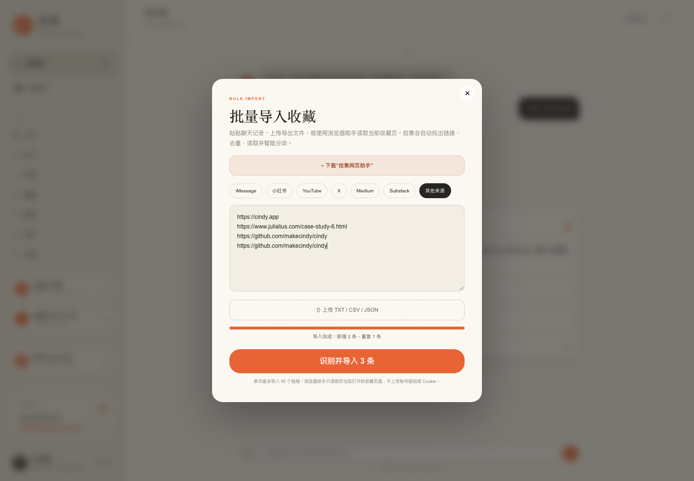
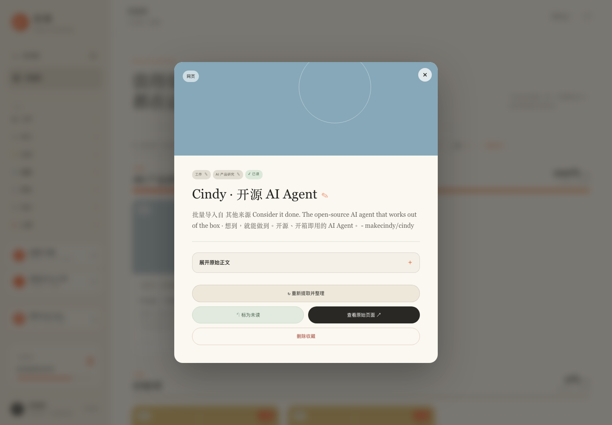
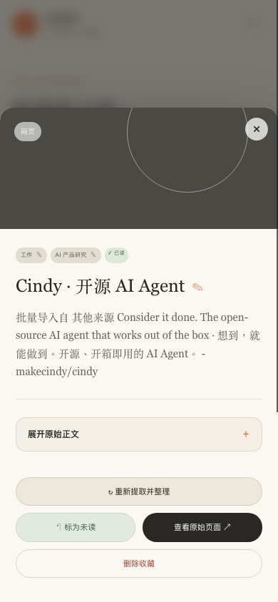

A轻量采集：先收下，再整理
从输入链接开始，把零散的资料接进同一个收藏库。本轮实际保存了 Cindy 官网、Julia 的 Reels AI 案例与 Cindy 的 GitHub 仓库。


 EN
EN04 / INDEPENDENT PRODUCT
将 Chrome 助手、iPhone 快捷入口与 Web 连接到同一个 AI 知识收件箱，组织采集、整理、沉淀与阅读。
Overview
收藏的价值不止是保存链接，更在于需要时能重新找到、读下去并复用。拾集把分散入口汇到统一的内容流程中。
The Problem
链接散落在聊天、浏览器与内容平台；即使收下，也容易失去上下文、重复保存，或忘记自己读到哪里。因此产品围绕采集、整理、查找与阅读形成连续路径。
Interaction Workflow
以下为真实运行截图，按使用流程排列。电脑端与手机尺寸并列，统一顶端对齐；可点击查看大图。
从输入链接开始，把零散的资料接进同一个收藏库。本轮实际保存了 Cindy 官网、Julia 的 Reels AI 案例与 Cindy 的 GitHub 仓库。

粘贴 4 行链接，识别为 3 个唯一地址；其中 1 条已存在，实际新增 2 条。结果反馈把“输入数量”和“新增数量”分开。

分类承接长期整理，关键词搜索处理当下查找。实际检索 “Cindy” 返回 2 条匹配收藏；正文提取结果有噪声时，允许手动纠正标题与分类。


在站内展开提取的正文，同时保留原文入口、编辑与已读操作。本轮将 GitHub 收藏标记为已读，并核对收藏库状态变化。


The System
接入 OpenAI API 进行摘要与分类，将采集到的内容转化为便于查找和阅读的收藏。保留原文入口与手动编辑，让用户能补充上下文、纠正分类，并持续管理阅读进度。
Verified Outcomes
Reflection & Scope
网页提取并不总是干净，自动分类也可能出错。保留原文、允许修改、反馈重复与已读状态，是让收藏库可持续使用的基础。